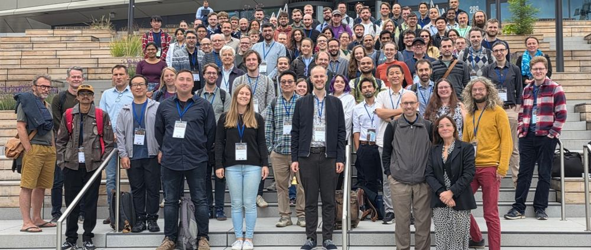

Frames from the road
Conferences, workshops and the places around them, mostly shot on my phone camera. Click any photo to see it full size.
21–25 September 2026, Heidelberg, Germany
EMMI Workshop: Light-Ion Collisions 2026
The ExtreMe Matter Institute (EMMI) brought experimentalists and theorists to the Kirchhoff-Institut für Physik at Heidelberg University to take stock of the first light-ion collision results: proton–oxygen, oxygen–oxygen and neon–neon runs at the LHC, and oxygen–oxygen at RHIC. The week asked what these small systems reveal about the origins of collective behaviour, and what the case is for future ion runs at the LHC.
My talk
An investigation of radial collectivity in Oxygen+Oxygen collisions at √sNN = 5.36 TeV via the v0(pT) observable
The organisers supported my participation as an early-career researcher.

